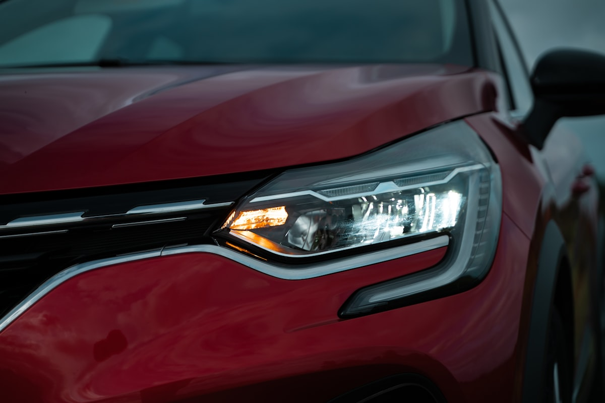

Ключі Renault в Ужгороді — дублікат, картка, програмування

Renault — особлива марка, бо замість звичайних ключів багато моделей використовують безключові картки Renault Hands-Free. Ми виготовляємо як класичні ключі для старіших Megane, Logan, Trafic, так і смарт-картки для Megane III/IV, Scenic III/IV, Laguna III, Espace IV/V.
Потрібен ключ Renault?
Зателефонуйте — скажемо точну ціну та чи є потрібна заготовка
З якими моделями Renault ми працюємо
- Renault Megane II / III / IV
- Renault Scenic II / III / IV
- Renault Laguna II / III
- Renault Logan
- Renault Trafic II / III
- Renault Master II / III
- Renault Kangoo
- Renault Duster
- Renault Captur
- Renault Espace IV / V
- Renault Clio
- Renault Sandero
Ціни на ключі Renault в Ужгороді
| Послуга | Ціна | Час |
|---|---|---|
| Дублікат механічного ключа (Logan, Trafic) | від 1500 грн | 30 хв |
| Викидний ключ з чіпом PCF7947 / PCF7961 | від 2200 грн | 45 хв |
| Карта Renault Hands-Free (Megane III) | від 3500 грн | 1 год |
| Карта Renault Hands-Free (Megane IV / Scenic IV) | від 4500 грн | 1–2 год |
| Програмування при повній втраті | від 4000 грн | 1–3 год |
| Заміна корпусу картки | від 700 грн | 20 хв |
| Ремонт викидного механізму ключа | від 400 грн | 30 хв |
* Точна вартість залежить від моделі, року випуску та комплектації. Уточнюйте по телефону.
Чому Seven Keys для Renault?
- Працюємо з картками Renault Hands-Free усіх поколінь
- Чіпи PCF7947, PCF7961M, HITAG-AES — у наявності
- Прив'язка через OBD або CLIP-діагностику
- Корпуси карт Megane III, Megane IV, Scenic — на складі
- Лезо VAC102 для всіх Renault від 2002 року
- Можемо програмувати при повній втраті всіх карток
Як замовити ключ Renault
- Зателефонуйте і назвіть модель, рік випуску та VIN (бажано)
- Ми перевіримо наявність заготовки і назвемо точну ціну
- Приїжджайте до майстерні (вул. Фединця 39, Ужгород) або викликайте майстра з обладнанням
- Виготовляємо і програмуємо ключ при вас — у середньому за 1–2 години
- Перевіряємо роботу: запуск, центральний замок, кнопки
Часті запитання про ключі Renault
Чи можете виготовити картку для Renault Megane III?
Так. Картка Megane III з чіпом PCF7947 — від 3500 грн з програмуванням. У наявності оригінальні та якісні аналогові корпуси.
Чи робите ключі для Renault Trafic / Master?
Так. Це фургони з викидним ключем і чіпом PCF7946/7947. Дублікат — від 2200 грн.
Скільки коштує картка для Renault Megane IV?
Картка Megane IV (HITAG-AES) — від 4500 грн. При повній втраті — від 6500 грн через складніший протокол.
Чи буде працювати стара картка після виготовлення нової?
Так. Усі попередні картки залишаться робочими.
Чи можете зробити ключ для Renault Logan?
Так. Logan / Sandero мають простіший викидний ключ — від 1800 грн з чіпом.
Не знайшли свою модель?
Працюємо з усіма Renault — зателефонуйте, підкажемо рішення